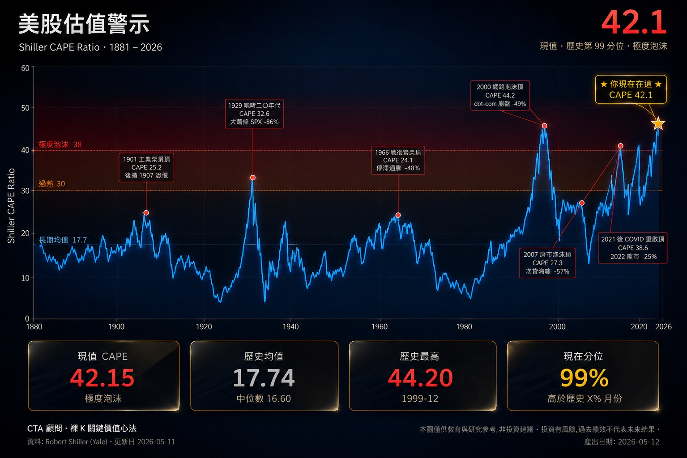
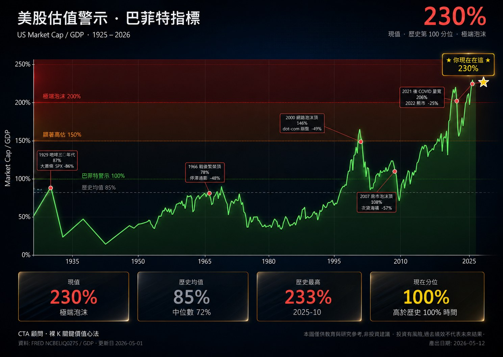

在所有衡量股市估值的工具中，能跨越百年週期、被諾貝爾獎得主與全球最成功投資人同時背書的，只有兩個 — 席勒本益比（CAPE）與巴菲特指標（市值/GDP）。當這兩個指標同時刷新人類金融史紀錄，過去從來不是「新時代」，而是「重力回歸」的前夕。2026 年第二季的台股與美股，正處於這樣的位置。
本文不預測崩盤時點，也不販賣末日恐慌。本文做的事情很單純：把數據攤開在你面前，讓你自己判斷現在處於估值週期的哪一階段，以及什麼樣的部位配置才符合你的風險承受度。
一、兩大核心估值指標：為什麼這兩個值得關注？
市場上的估值指標有上百種 — 本益比、股價淨值比、股價營收比、EV/EBITDA。但絕大多數指標都有一個致命缺陷：它們衡量的是「短期」。在景氣循環的高點，企業盈餘會被暫時性地推高，傳統本益比看起來「合理」 — 直到盈餘崩盤、本益比瞬間翻倍。
真正能告訴你「現在貴不貴」的長期估值指標，必須剔除短期循環雜訊。這就是 CAPE 與巴菲特指標誕生的原因。
由耶魯大學教授 Robert Shiller 提出，正式名稱為 Cyclically Adjusted Price-to-Earnings Ratio（循環調整本益比）。
核心邏輯：使用過去 10 年的「實質盈餘」（經通膨調整後）作為分母，平滑短期景氣循環的影響。
解讀重點：看清「貴不貴」。歷史上 CAPE 突破 30 通常代表估值進入泡沫風險區間。
巴菲特公開推崇的長期估值衡量。將整體股市總市值除以當年度 GDP，得出比值。
核心邏輯：實體經濟（GDP）是股市真實獲利的源頭。當市值遠超 GDP，意味市場「預支未來」的程度過高。
解讀重點：看清「瘋不瘋」。巴菲特本人多次表示，當這個指標突破 100% 就應警覺，突破 150% 是顯著高估。
這兩個指標的價值不在於「精準預測時點」 — 沒有任何指標能做到那件事。它們的價值在於告訴你 「相對於歷史，你目前處於什麼位置」。位置決定的不是何時崩盤，而是未來十年的預期報酬率。研究顯示，當 CAPE 處於極端高點進場，未來十年的年化報酬率往往是個位數甚至負值；反之若在低點進場，未來十年通常有兩位數年化報酬。
二、橫跨 36 年的歷史對照：我們處於前所未有的「估值共振區」
下表整理了過去四次重大市場高點，以及 2026 年 5 月的當前數據。請特別注意最右一欄與歷史峰值的差距。
| 市場 | 指標 | 1990 | 2000 | 2008 | 2021 | 2026/05 |
|---|---|---|---|---|---|---|
| 美股 S&P 500 |
CAPE | ~17.5 | 44.2 | 27.5 | 38.5 | 41.0 |
| 巴菲特指標 | ~60% | 150% | 110% | 190% | 230% | |
| 台股 TAIEX |
CAPE | N/A | 33.5 | 27.5 | 35.2 | 41.18 |
| 巴菲特指標 | 120% | 135% | 165% | 270% | 425.6% |
資料整理：美股 CAPE 來源為 Robert Shiller 教授耶魯大學公開資料庫（截至 2026-04）；台股 CAPE 為 CTA 研究團隊依加權指數與通膨調整盈餘估算（非 Shiller 官方系列）；巴菲特指標依美國 BEA、台灣主計總處 GDP 與股市總市值計算（截至 2026-Q1）。歷史峰值取各次循環頂點區間之代表值，非單日精準值。
從這張表，三個結構性事實值得反覆思考：
1. 美股 CAPE 41.0：歷史第二高，僅次於 2000 年網路泡沫。 2008 金融海嘯前的 CAPE 是 27.5；2021 疫情泡沫頂點是 38.5。當前的 41.0 已超越所有近代崩盤前的水準，僅次於 2000 年的 44.2。

2. 美股巴菲特指標 230%：超越 2000、2021 兩次歷史頂點。 巴菲特在 2001 年於 Fortune 雜誌撰文，將市值/GDP 描述為他長期使用的單一估值指標，並對當時的高位水準提出警示。當前的 230% 已遠超該文寫作時的環境，缺乏直接的歷史對照。

3. 台股巴菲特指標 425.6%：受 TSMC 全球供應鏈拉動的結構性高位。 台股這個數字特別高，部分來自台積電與半導體生態鏈在全球供應鏈中的特殊地位（市值反映全球需求，GDP 只計算本地產出）。但即使把這個結構性因素納入考量，從 2021 年的 270% 到 2026 年的 425% 仍然是顯著的跳升 — 短短 5 年增加了相當於 2008 金融海嘯前「全幅」的位能累積。
三、為什麼 2026 年是「最危險的共振」？
單一指標處於高點並不罕見。但兩個獨立衡量維度的指標同時處於歷史極端，這才是 2026 年的特殊之處。我們把這個現象稱為「估值共振」 — 它的危險性來自三個層面：
1. 雙重極值：估值過熱不再是單一現象
過去四十年，CAPE 與巴菲特指標通常會有「先後」 — 一個極端時，另一個還在合理區間。2000 年 CAPE 創新高時，巴菲特指標還在 150%；2021 年巴菲特指標衝高時，CAPE 是 38.5。但 2026 年是首次兩個指標同時處於各自的歷史極端區間。台股 CAPE 41.18 與巴菲特指標 425.6% 的同步刷新，意味著「貴」與「瘋」都已達到史無前例的水位。這不是「估值偏高」，是「結構性極端」。
2. 重力位能：修正幅度往往非線性放大
2000 年巴菲特指標 150% 引發了納指 80% 的跌幅；那時的「位能」（高估幅度）是 50 個百分點（150% - 合理值 100%）。當前美股 230%（位能 130 個百分點）、台股 425%（位能 325 個百分點，假設合理值 100%），位能累積已是 2000 年的數倍。
歷史經驗顯示，估值偏離合理區間越遠，後續修正幅度通常越大、且非線性放大。這不是物理定律，而是過去四次循環的經驗觀察 — 但足以提醒我們，當前的位能累積值得嚴肅看待。
3. 時空共振：當估值過熱遇上週期節點
估值高只是「空間」上的危險。當這個高位置遇上「時間」上的週期節點 — 例如重要的政策轉折、利率循環反轉、AI 變現速度的真實驗證 — 重力回歸的條件正在累積。本文無法也不會預測時點。但專業交易者該做的不是等到崩盤後才反應，而是在共振區內就把風險預算先準備好。
在 2026 年，CAPE 41 配巴菲特指標 230% 還在創新高。
這不叫「結構性牛市」，這叫「結構性遲到」。
四、總結與示警：保住獲利，遠離瘋狂
本文最後三個重點，請依序閱讀：
這個數字背後的假設是：AI 變現速度將永遠等於或快於資本市場給予的溢價速度。一旦這個假設出現任何裂痕（例如某季 AI 龍頭資本支出回報率不如預期、某項變現計畫延遲），估值校正將是劇烈且非線性的。
在這個位置加碼，潛在上行空間相對受限，但若估值回歸歷史均值，下行幅度可能顯著大於上行 — 這就是「風險報酬不對稱」。同樣的操作在 2 萬點與 4 萬點的本質完全不同。請誠實問自己：以這個風險回報比，這筆交易值得嗎？
這不是叫你清空部位、空手等崩盤 — 那是另一種極端。但在估值共振區，逐步將部分獲利轉為現金或穩健現金流工具（例如低風險放貸、短期國債），是專業資金管理的基本動作。當「時間」與「空間」重新對齊（估值回到合理區間），你才有彈藥重新進場。
五、寫給每一位身在 4 萬點的投資人
本文不販賣恐慌，也不鼓吹放空。市場是否會在三個月、六個月、或兩年後修正，沒有人知道。歷史告訴我們的不是「精準時點」，而是「結構性風險已經堆疊到什麼程度」。
專業交易者與一般散戶最大的差別，從來不是預測能力 — 而是面對極端估值時的反射動作。當所有人都在加碼，他們在控制部位；當所有人都在歡呼，他們在檢視風控；當所有人都認為「這次不一樣」，他們知道，這四個字是金融史上最昂貴的句子。
把獲利保住，比追逐最後 10% 的漲幅重要得多。風險來臨前的減倉，永遠比風險來臨後的逃命便宜。